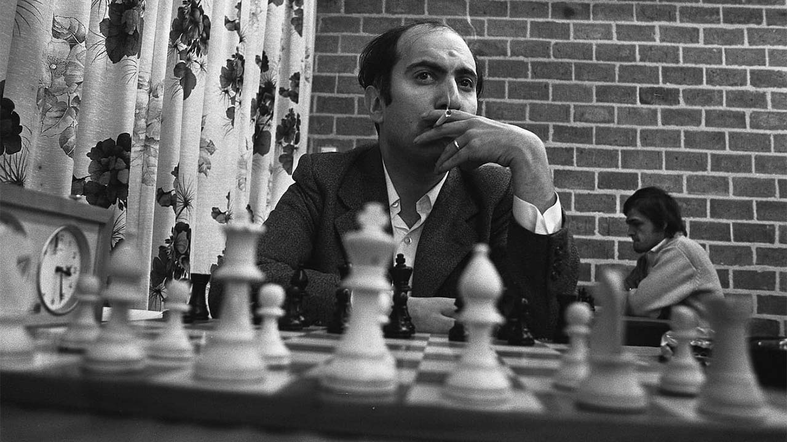

Mikhail Tal - The Magician from Riga
- Became the youngest World Chess Champion in 1960 at age 23.
-
Nicknamed "The Magician from Riga" for his daring attacking style.
-
Famous for sacrificing material to launch brilliant tactical
attacks.
-
Played incredible games even while struggling with chronic health
problems.
-
Regarded as one of the most creative and beloved players in chess
history.
|

|
Learn more about Tal's life and games on his
Wikipedia page.
His influence on attacking chess continues to inspire players around the
world.